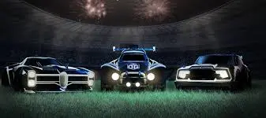

In Rocket League gibt es verschiedene Autos, die in 6 verschiedene
Unterteilt sind. Die Hitboxen sind die Formen, die die Autos haben und
die bestimmen, wie der Ball von den Autos getroffen wird. Es gibt
verschiedene Hitboxen, die von den Entwicklern des Spiels erstellt
wurden. Jede Hitbox hat ihre eigenen Vor- und Nachteile.

Community
die Spieler unterteilen sich in zwei gruppen:
Freestyler
Die Freestyler sind die Spieler, die versuchen, den Ball auf die
spektakulärste Weise ins Tor zu befördern. Sie zelebrieren Trick
welche Wochen und sogar Monate brauchen um die zu meistern Bei
dieser Art vom Spiel geht es Vordergrund um den Skill die
verschiendenen Mechaniken zu meistern. Hier ist die Beliebteste Auto
der Dominus, welche auch Namengeber der Hitbox ist.
Die Tryhards sind die Spieler, die versuchen, das Spiel zu gewinnen.
Sie spielen das Spiel, um zu gewinnen und nicht, um spektakuläre
Tore zu schießen. Skill ist hier nur nützlich wenn er gewinnbringend
eingesetzt wird. Lange Zeit war das Octane das beliebteste Auto,
welches auch die Hitbox definiert. Doch seit einiger Zeit ist das
Fennec das beliebteste Auto. Daran ist massgeblich die RLCS schuld.